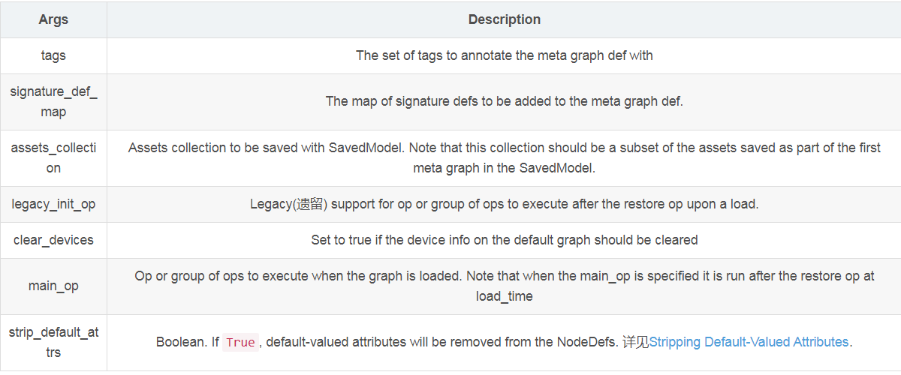
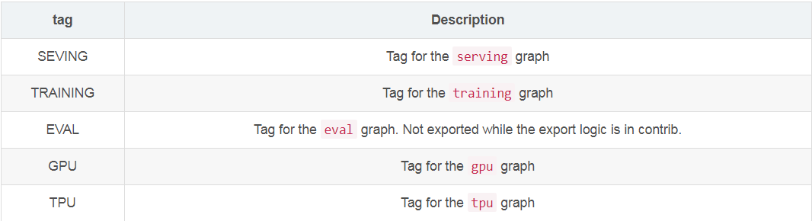

Created By 徐静
Date 2018-11-11
☠ Simple TensorFlow Serving
☠ TensorFlow Serving + Docker
☠ 基于微信的图像识别应用 【灵感来源】
对于TensorFlow训练的Model呢？
我们将部署一个训练好的CNN模型，并基于微信做成图像识别应用 ☕
☠ Support distributed TensorFlow models
☠ Support the general RESTful/HTTP APIs
☠ Support inference with accelerated GPU
☠ Support curl and other command-line tools
☠ Support clients in any programming language
☠ Support code-gen client by models without coding
☠ Support inference with raw file for image models
☠ Support statistical metrics for verbose requests
☠ Support serving multiple models at the same time
☠ Support dynamic online and offline for model versions
☠ Support loading new custom op for TensorFlow models
☠ Support secure authentication with configurable basic auth
☠ Support multiple models of TensorFlow/MXNet/PyTorch/Caffe2/CNTK/ONNX/H2o/Scikit-learn/XGBoost/PMML
# 常用命令
simple_tensorflow_serving --model_base_path="./model" --model_platform="scikitlearn" --model_version="v0.1.0"
simple_tensorflow_serving --model_config_file="./examples/model_config_file.json"
# 服务的常用配置
{
"model_config_list": [
{
"name": "ResNet For WeChat Server",
"base_path": "/home/soft/simple_tf_server/ResNet_v1",
"platform": "tensorflow"
"version":lx_v0.1.0
}, {
"name": "server2",
"base_path": "model_save_path2",
"platform": "scikitlearn"
}, {
"name": "server3",
"base_path": "path3",
"platform": "mxnet"
}
]
}
☠经常看到的 tf.train.Saver对应的东西。使用这种方法保存模型会产生两种文件:
.meta: 里面存储的是整个graph的定义; checkpoint: 这里保存的是 variable 的状态 .index文件保存了当前参数名.data文件保存了当前参数值
# 模型保存的过程
checkpoint_dir = "mysaver"
# first creat a simple graph
graph = tf.Graph()
#define a simple graph
with graph.as_default():
x = tf.placeholder(tf.float32,shape=[],name='input')
y = tf.Variable(initial_value=0,dtype=tf.float32,name="y_variable")
update_y = y.assign(x)
saver = tf.train.Saver(max_to_keep=3)
init_op = tf.global_variables_initializer()
# train the model and save the model every 4000 iterations.
sess = tf.Session(graph=graph)
sess.run(init_op)
for i in range(1,10000):
y_result = sess.run(update_y,feed_dict={x:i})
if i %4000 == 0:
saver.save(sess,checkpoint_dir,global_step=i)
# 模型复原
tf.reset_default_graph()
restore_graph = tf.Graph()
with tf.Session(graph=restore_graph) as restore_sess:
restore_saver = tf.train.import_meta_graph('mysaver-8000.meta')
restore_saver.restore(restore_sess,tf.train.latest_checkpoint('./'))
print(restore_sess.run("y_variable:0"))
☠ tf.train.Saver()有缺点
# tf.train.import_meta_graph函数给出model.ckpt-n.meta的路径后会加载图结构，
# 并返回saver对象
import tensorflow as tf
# 直接加载持久化的图
saver = tf.train.import_meta_graph(
"path/xxx.meta")
with tf.Session() as sess:
saver.restore(sess,"path/xxx.ckpt")
# 通过张量名称获取张量
print(sess.run(tf.get_default_graph().get_tensor_by_name("add:0")))
推荐使用SaveModel. SaveModel是一种与语言无关，可恢复的密封式序列化格式。TensorFlow提供了多种与SavedModel交互的机制，如tf.saved_model API、Estimator API和CLI。
1.建立一个 tf.saved_model.builder.SavedModelBuilder.
2.使用刚刚建立的 builder把当前的graph和variable添加进去：SavedModelBuilder.add_meta_graph_and_variables(...)
3.可以使用 SavedModelBuilder.add_meta_graph 添加多个meta graph
tf.saved_model.loader.load()
1.要在其中恢复图定义和变量的会话
2.用于标识要加载的 MetaGraphDef 的标签
3.SavedModel 的位置（目录）
☠ tf.saved_model.builder.SavedModelBuilder
class tf.saved_model.builder.SavedModelBuilder
# 初始化方法
__init__(export_dir)
# 导入graph与变量信息
add_meta_graph_and_variables(
sess,
tags,
signature_def_map=None,
assets_collection=None,
legacy_init_op=None,
clear_devices=False,
main_op=None
)
# 载入保存好的模型
tf.saved_model.loader.load(
sess,
tags,
export_dir,
**saver_kwargs
)
☠ 模型保存后的结构
assets/ #是包含辅助（外部）文件（如词汇表）的子文件夹
assets.extra/ #一个子文件夹，其中较高级别的库和用户可以添加自己的资源，这些资源与模型共存，但不会被图加载
variables/ #是包含 tf.train.Saver 的输出的子文件夹
variables.data-?????-of-?????
variables.index
saved_model.pb|saved_model.pbtxt #是 SavedModel 协议缓冲区。它包含作为 MetaGraphDef 协议缓冲区的图定义
☠ Example
tensor_info_input = tf.saved_model.utils.build_tensor_info(input)
tensor_info_output = tf.saved_model.utils.build_tensor_info(output)
sess = tf.Session()
builder = tf.saved_model.builder.SavedModelBuilder(export_path)
signatures =(
tf.saved_model.signature_def_utils.build_signature_def(
inputs={'input': tensor_info_input},
outputs={'output': tensor_info_output},
method_name=tf.saved_model.signature_constants.PREDICT_METHOD_NAME
)
)
sess.run(tf.global_variables_initializer())
builder.add_meta_graph_and_variables(sess=sess, tags=[tf.saved_model.tag_constants.SERVING], signature_def_map={
'predict': signatures
})
builder.save()
☠ 参数列表
☠ 参数tags
1.SignatureDef，将输入输出tensor的信息都进行了封装，并且给他们一个自定义的别名，所以在构建模型的阶段，可以随便给tensor命名，只要在保存训练好的模型的时候，在SignatureDef中给出统一的别名即可。
2.TensorFlow的关于这部分的例子中用到了不少signature_constants，这些constants的用处主要是提供了一个方便统一的命名。
# 构建signature
tf.saved_model.signature_def_utils.build_signature_def(
inputs=None,
outputs=None,
method_name=None
)
# 构建tensor info
tf.saved_model.utils.build_tensor_info(tensor)
训练好的saveModel要保存
simple_tensorflow_serving -h
simple_tensorflow_serving --model_base_path="/home/soft/model"
☠ saveModel导入
export_dir = ...
...
with tf.Session(graph=tf.Graph()) as sess:
tf.saved_model.loader.load(sess, [tag_constants.TRAINING], export_dir)
...
简单保存：tf.saved_model.simple_save
搭配 Estimator 使用 SavedModel
使用 CLI 检查并执行 SavedModel
☠ Docker-快到碗里来！
Docker 是一个开源的应用容器引擎，基于 Go 语言 并遵从Apache2.0协议开源。
Docker 可以让开发者打包他们的应用以及依赖包到一个轻量级、可移植的容器中，然后发布到任何流行的 Linux 机器上，也可以实现虚拟化。
容器是完全使用沙箱机制，相互之间不会有任何接口（类似 iPhone 的 app）,更重要的是容器性能开销极低。
☠ 1.模型保存：savedModel
【点我查看官方提供的样例】
☠ 2.Docker安装tensorflow serving
安装方式有很多种，官方推荐通过Docker
# docker镜像中运行资源(会在dockerHub中安装该镜像)
docker run tensorflow/serving
#安装GPU版的，还需要nvidia-docker
docker pull tensorflow/serving:latest-gpu
#查看现在系统中存在的镜像
docker images
# 后边会常用的docker命令
docker pull **
docker ps # 查看正在运行的容器列表
docker stop IDs
docker rmi IDs
docker rm XXX
☠ 3.Docker部署tensorflow serving
# 在我们的GPU服务器上
docker run -p 8501:8501 \
--mount type=bind,source=/home/xujing/lx_soft/saved_model_half_plus_two_cpu,target=/models/half_plus_two \
-e MODEL_NAME=half_plus_two -t tensorflow/serving &
curl -d '{"instances": [1.0, 2.0, 5.0]}' \
-X POST http://localhost:8501/v1/models/half_plus_two:predict
# 在我们GPU服务器上
docker run -p 8501:8501 \
--mount type=bind,source=/home/xujing/lx_soft/resnet,target=/models/resnet \
-e MODEL_NAME=resnet -t tensorflow/serving &
开启我们的TensorFlow Serving 部署ResNet 50
☠ 4.测试部署的TensorFlow部署的Model
很大的坑调了我2天！
from __future__ import print_function
import base64
import requests
SERVER_URL = 'xxx'
# from scipy import ndimage # 图像转化为n维数组
# image_ndarray = ndimage.imread("pic3/1.jpg", mode="RGB") #RGB
def predict_api():
#图片转换为字节
with open('pic3/1.jpg','rb') as f:
res = f.read()
predict_request = '{"instances" : [{"b64": "%s"}]}' % base64.b64encode(res).decode()
print(predict_request)
headers = {'Content-Type': 'application/json'}
response = requests.post(SERVER_URL, data=predict_request)
response.raise_for_status()
prediction = response.json()['predictions'][0]
#prediction = response.json()
proba = max(prediction['probabilities'])*100
class1000 = prediction['classes']
print('Prediction class: %s and Prediction proba: %s%%' % (class1000,proba ))
if __name__ == "__main__":
predict_api()
开启我们的TensorFlow Serving 部署ResNet 50
最后一步我要要做的是微信端的开发！
☠ 我们基于微信构建最终的VQA系统
⚡ 我们采取基于微信聊天的接口
☠ 核心代码如下:
'''
过程描述：
1.登录微信
2.检查图像消息和发送人员
3.获取图像并做简单图像处理
4.访问tensorflow serving RestAPI
5.获得预测结果
6.返回给微信发送给接收者
'''
__version__="v0.1.0"
__author__="Xu Jing"
import requests
import json
import datetime
import itchat
# import wxpy
import time
import base64
import pandas as pd
img_label = pd.read_excel("imgeNet_label/Image_label.xlsx")
SERVER_URL = 'http://172.16.100.202:8501/v1/models/resnet:predict'
def predict_api(img_path):
#图片转换为字节
with open(img_path,'rb') as f:
res = f.read()
predict_request = '{"instances" : [{"b64": "%s"}]}' % base64.b64encode(res).decode()
#print(predict_request)
headers = {'Content-Type': 'application/json'}
response = requests.post(SERVER_URL, data=predict_request)
response.raise_for_status()
prediction = response.json()['predictions'][0]
#prediction = response.json()
proba = max(prediction['probabilities'])*100
class1000 = prediction['classes']
class_EN = list(img_label[img_label['class_NO']==class1000]['class_EN'])[0]
return (class_EN,proba)
#print('Prediction class: %s and Prediction proba: %s%%' % (class1000,proba))
# 登录 & 消息回复
@itchat.msg_register(itchat.content.PICTURE,isGroupChat=True)
def reply_text(msg):
chatroom_id = msg['FromUserName']
chatroom_NickName = [item['NickName'] for item in chatrooms if item['UserName'] == chatroom_id ]
username = msg['ActualNickName']
print(chatroom_NickName[0]+'@'+username)
if chatroom_NickName[0] =='XXXXX':
itchat.send("[%s]收到我们一家@%s的信息：%s\n" %(time.strftime("%Y-%m-%d %H:%M:%S",time.localtime(msg['CreateTime'])),username,"一张图片"),'filehelper')
msg.download(msg.fileName)
# 发送信息
itchat.send('@%s@%s' % (username,msg['FileName']))
print('%s received' % msg['Type'])
my_class,my_proba = predict_api(msg.fileName)
return '@%s 让我猜猜,你发的这张图片有 %s %%的概率是: %s \n' %(username,my_proba,my_class)
elif chatroom_NickName[0] !='XXXXXX':
return
itchat.auto_login()
chatrooms = itchat.get_chatrooms(update=True, contactOnly=True)
itchat.run()
input()
☠ 基于WeChat的VQA效果:
☠ 基于WeChat的VQA效果:
☠ 基于WeChat的VQA效果:
最后开启服务让我们体验基于微信的VQA系统！ ☕
- Thanks Reveal.js
- Reveal.js
- Source code & documentation
-
Online Slides
- About Xu Jing